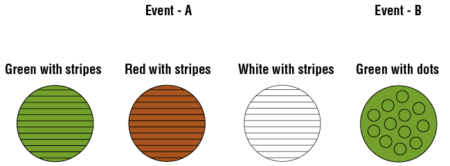

Los eventos complementarios son dos resultados de un evento, siendo éstos los dos únicos resultados posibles.
Los eventos mutuamente excluyentes son dos resultados de un evento que no pueden ocurrir al mismo tiempo.
Todos los eventos complementarios son mutuamente excluyentes, pero todos los eventos mutuamente excluyentes no son necesariamente complementarios.
Ejemplo de eventos mutuamente excluyentes
Los sucesos que no tienen intersección entre ellos se conocen como sucesos mutuamente excluyentes.
Ejemplo:
Suceso A – extraer una pelota con rayas:
Suceso B – extraer una pelota verde con puntos:
No hay ninguna pelota en común entre los dos sucesos, es decir, no hay intersección entre ambos sucesos.
Links de ayuda